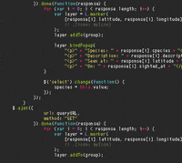
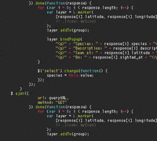

Mídia Relacionada:
Abaixo Mostro com algumas Imagens e videos sobre o JavaScript o mais Amado ou Odiado dos Devs.
| Imagem | Vídeo | GIF |
|---|---|---|

|
 |
Não, JavaScript e Java são linguagens de programação completamente distintas, criadas com propósitos diferentes. Java, desenvolvida pela Sun Microsystems em 1995, é uma linguagem orientada a objetos robusta, voltada para a criação de aplicativos complexos que funcionam de maneira independente da plataforma.
Já o JavaScript, criado em 1995 pela Netscape, é uma linguagem de scripts voltada principalmente para a criação de interatividade em páginas da web. O nome “JavaScript” foi escolhido pela Netscape para aproveitar a popularidade de Java na época, mas essa similaridade é só no nome, pois as linguagens não compartilham nada na estrutura.
Resumindo: Java é voltado para desenvolvimento de softwares independentes, enquanto JavaScript é amplamente usado para interações em navegadores. A confusão entre os nomes é comum, mas JavaScript não é "Java simplificado" nem uma variação de Java.
JavaScript surgiu em setembro de 1995. Nessa época, a internet estava em rápida expansão e o Netscape Navigator era o navegador dominante. A Netscape tinha o objetivo de tornar as páginas da web mais dinâmicas e interativas, e, para isso, contratou Brendan Eich para desenvolver uma linguagem de scripts que pudesse ser executada no navegador.
A primeira versão do JavaScript, chamada inicialmente de "Mocha" e depois renomeada para "LiveScript", foi criada em apenas 10 dias. Logo depois, a Netscape fechou uma parceria com a Sun Microsystems e renomeou a linguagem para "JavaScript". Essa linguagem rapidamente se popularizou e se tornou essencial para o desenvolvimento web.
O criador do JavaScript foi Brendan Eich, um programador contratado pela Netscape em 1995. Ele desenvolveu a linguagem em apenas 10 dias, a pedido da Netscape, para atender à necessidade de tornar o navegador Netscape Navigator mais interativo e responsivo.
Eich projetou o JavaScript como uma linguagem que seria simples o suficiente para ser usada por desenvolvedores e, ao mesmo tempo, poderosa o bastante para criar efeitos e interações na web. Embora tivesse apenas 10 dias para desenvolver a linguagem, o trabalho de Eich lançou as bases para uma das tecnologias mais influentes da web.
Após criar o JavaScript, Brendan Eich continuou sua carreira na Netscape até que a empresa deixou de ser relevante no final dos anos 90, principalmente devido ao avanço de navegadores como o Internet Explorer. Posteriormente, Eich se tornou um dos cofundadores da Mozilla Foundation, uma organização sem fins lucrativos que buscava criar um navegador alternativo ao Internet Explorer e ao Netscape.
Em 2004, a Mozilla lançou o Firefox, que se tornou um dos navegadores mais populares da época e teve um papel importante no desenvolvimento de uma web mais aberta e acessível. Brendan Eich também contribuiu para o desenvolvimento do padrão ECMAScript, que formaliza a linguagem JavaScript e assegura a compatibilidade entre navegadores.
Em 2015, Eich fundou uma nova empresa chamada Brave Software, responsável pelo navegador Brave, que foca na privacidade do usuário e bloqueio de anúncios invasivos. Tanto a Mozilla quanto o Brave seguem ativas e relevantes no mercado de tecnologia atualmente.
| Imagem | Vídeo | GIF |
|---|---|---|
|
|
 |